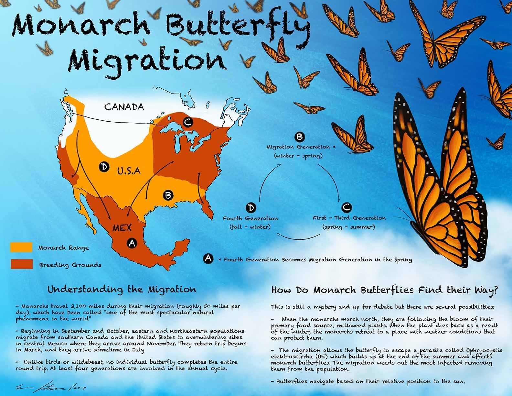

Monarch Butterfly Migration
Overview:
Each year, millions of Monarch butterflies (Danaus plexippus) embark on one of nature’s most remarkable migrations. These delicate insects travel thousands of miles between their summer breeding grounds in the United States and Canada and their overwintering sites in central Mexico.
Journey South

In late summer and early fall, Monarchs from across North America begin their journey south. This “super generation” of Monarchs—born in late summer—can live up to eight times longer than earlier generations, enabling them to complete the full migration to Mexico.
Wintering in Mexico
By November, Monarchs arrive in the Oyamel fir forests of the Sierra Madre Mountains in Mexico, where they cluster in the trees by the millions. These sanctuaries provide the perfect cool and moist microclimate needed for survival during the winter months.
Return North

In March, as temperatures rise, Monarchs begin their journey north, mating along the way and laying eggs on milkweed plants. The return trip takes several generations to complete, with new butterflies continuing the journey north until they repopulate their range in the United States and Canada by summer.